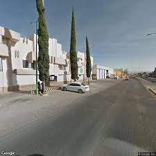

PABSA es una empresa ubicada en Tlacotepec de Benito Juárez, Puebla, dedicada al procesamiento y producción de alimentos para animales. Genera empleos en la región y contribuye al desarrollo económico del municipio. Además, trabaja con materias primas agrícolas para la elaboración de productos destinados al sector pecuario.